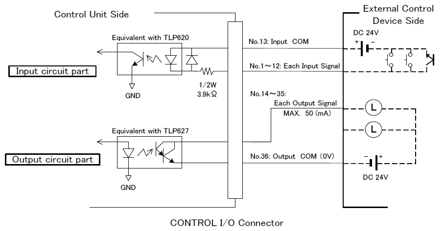

두 모델간의 하드웨어 차이에 따른 IO 보드 소손 방지 지침
ENRZ-AU50 vs AU55 IO 배선 가이드
위험요소: 커넥터 하우징 동일
두 모델 모두
Sumitomo 3M 10136-3000PE
로 동일
동일한 커넥터로 인하여 배선을 교차사용 시
메인보드 파손
즉, AU50 케이블 재사용 시 24V 전원이 신호 핀으로 유입되어
포토커플러 소손
01
모델간 입출력(I/O) 의 주요 차이
AU50 / AU50M
비대칭
Input
12점
Output
22점
AU55 / MAU55
입출력 균등 대칭
Input
16점
Output
16점
02
핀 배열(Pin-out) 상세 비교
기능 항목
AU50 / AU50M
AU55 / MAU55
Input 전원 (COM)
Pin 13 (COM)
Pin 17, 18 (COM+)
Output 전원 (COM)
Pin 36 (COM)
Pin 35, 36 (COM-)
입력 신호 범위
Pin 1 ~ 12
Pin 1 ~ 16
출력 신호 범위
Pin 14 ~ 35
Pin 19 ~ 34
03
설명서 참조란
ENRZ-AU50M Manual
Section 4.8
커넥터의 하드웨어 사양
Section 5.3
핀 배열 및 초기 신호 맵핑
Section 5.3.1
Sink/Source 회로 결선도의 예
Section 5.3.2
신호 타이밍 차트
ENRZ-MAU55 / AU55
Section 4.6
입출력 구성 요약 (16in/16out)
Section 8.4
필독: 컨트롤 커넥터 핀 배열
Section 8.4.1
회로부 결선(제어 전원 사양)
Section 8.4.2
신호 타이밍 차트
04
안전한 시스템 업그레이드를 위한 3단계 필수 수칙
01
기존 AU50 케이블은 즉시 폐기하거나 분리하고, AU55 전용 신규 케이블 제작
02
전원 투입 전 멀티미터로
Pin 17/18(+24V)
과
Pin 35/36(0V)
전위 최종 측정
03
출력 접점 축소(22→16)에 따른 PLC 로직 수정 및 Fieldbus 통합 제어 확인
05
참고 이미지: AU50 IO 회로도 예시
